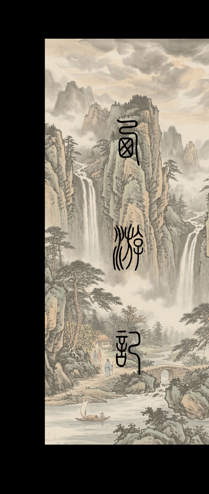
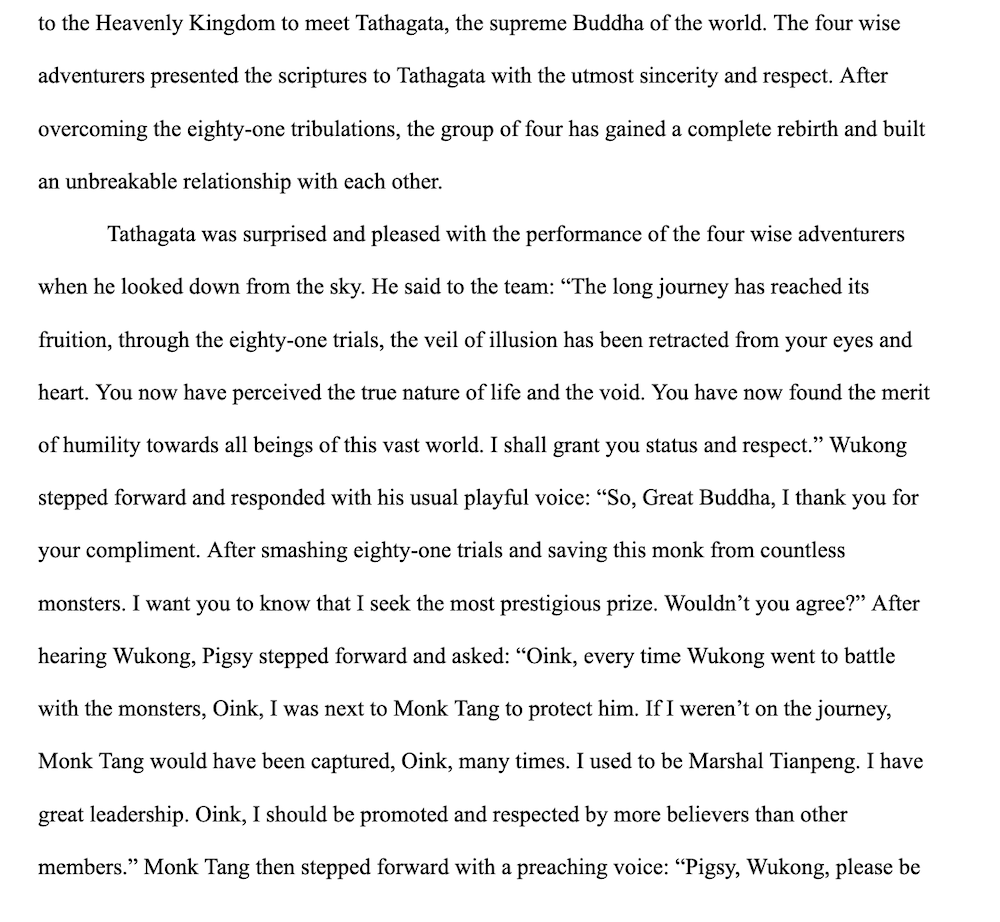
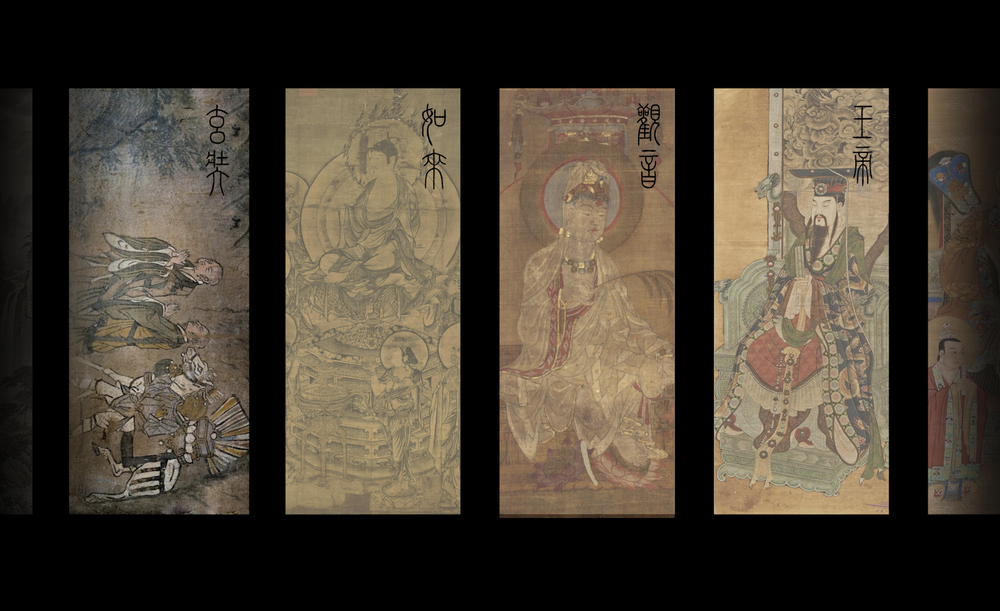

Myth
Journey To West Presentation.
Explore some cultural significance and art behind the classic Myth - Journey To West(JTW)

Section 01
Modern Adaptation
A research essay on how JTW is connected and adapted to the Modern World.

Section 02
Contiune the story
A three pages short story that reorganize the ending of the story to leave a cliffhanger.

Section 03
Connections
Dipiction of Different characters that existed or connected to other Chinese Myths and cultures.
Open horizontal track